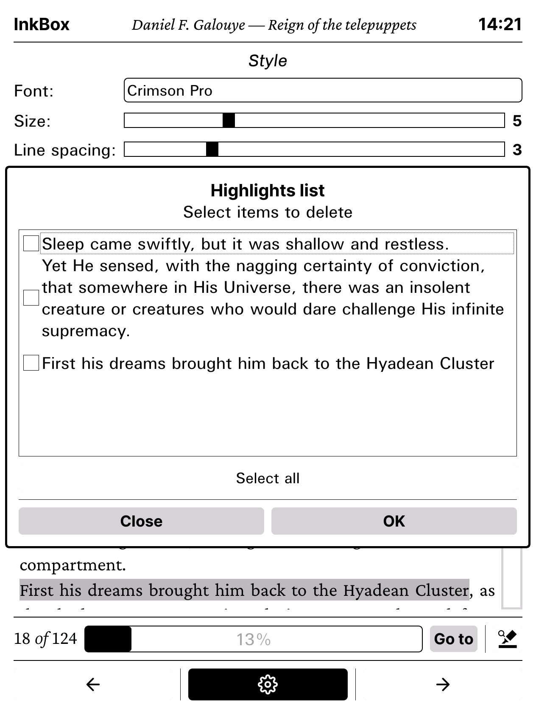
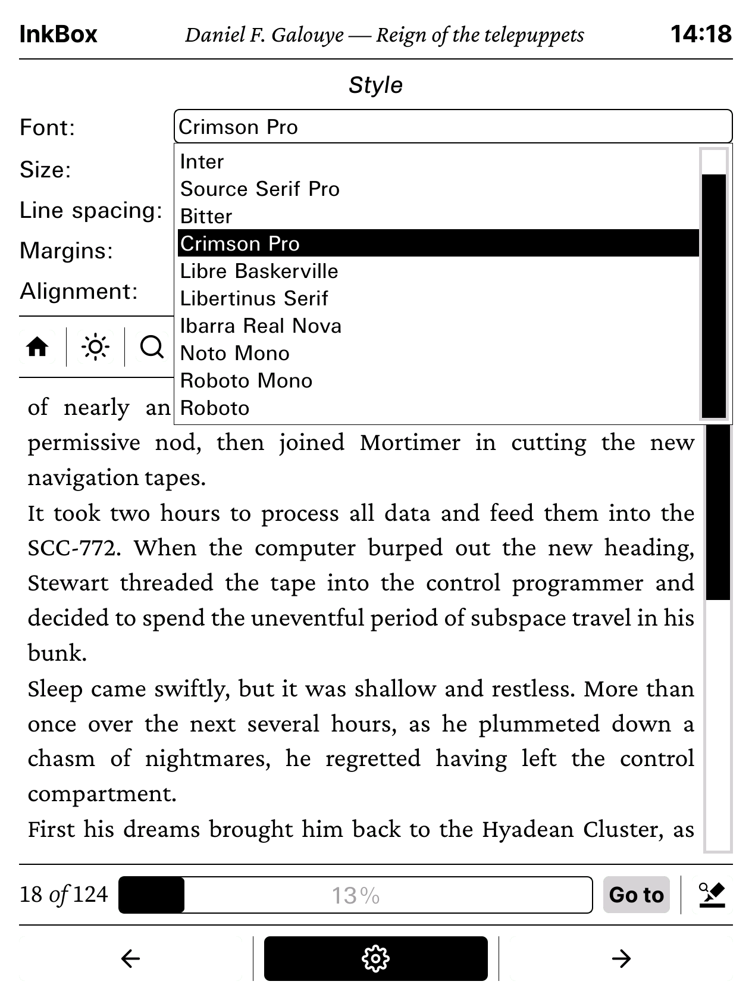
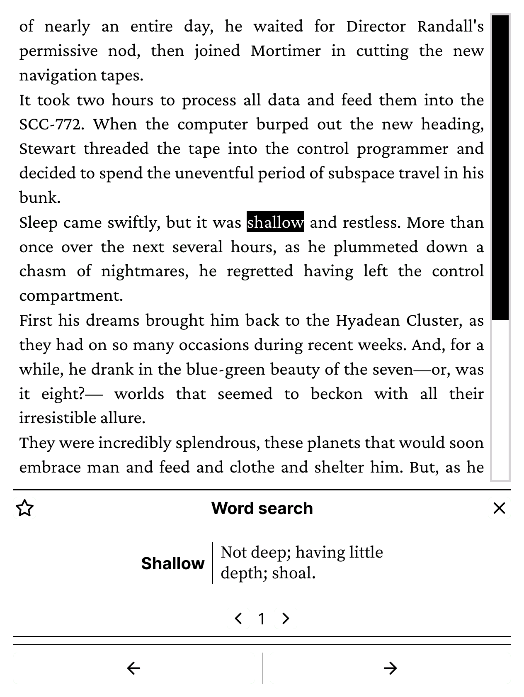
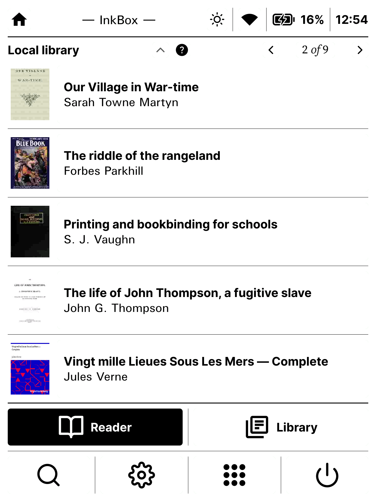
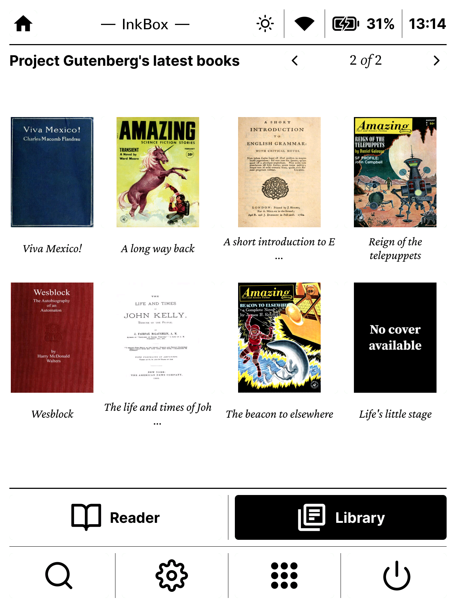
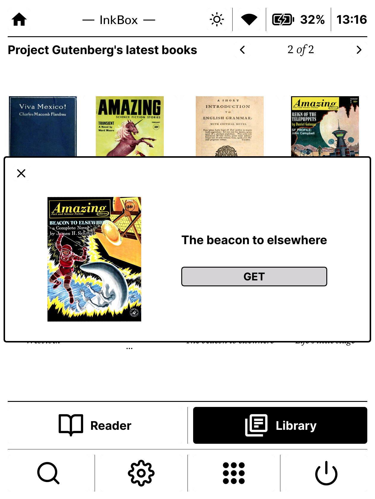

Quill OS screenshots

Reader framework
Reader framework: Highlights list dialog
Reader framework: font chooser
Reader framework: dictionnary search

Home screen
Local library: Main view
Online library: Main view
Online library: Book info dialog